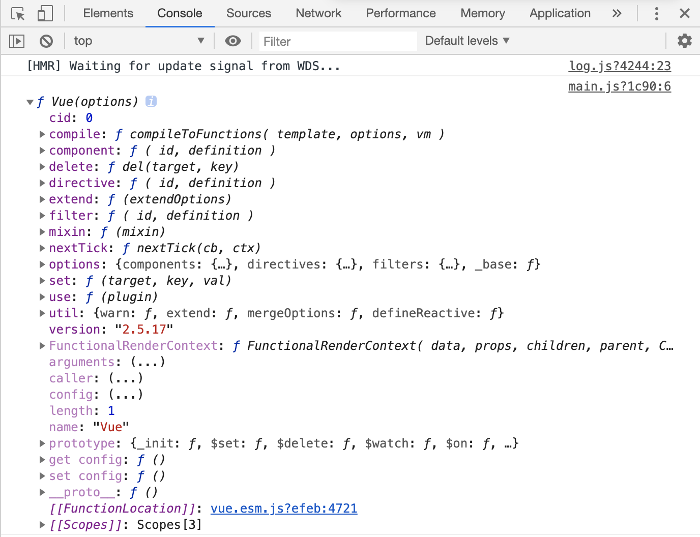
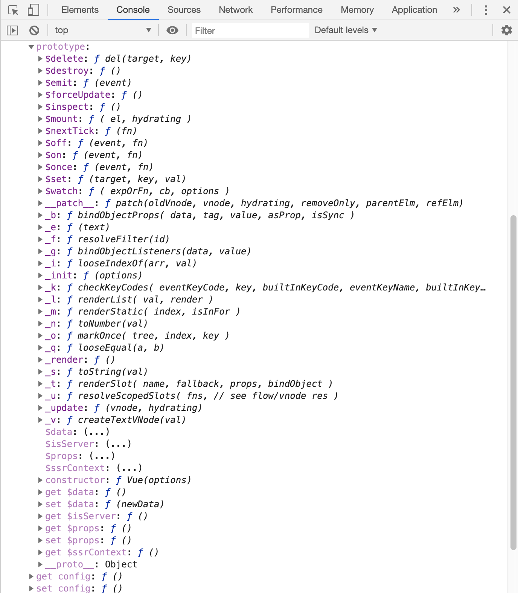
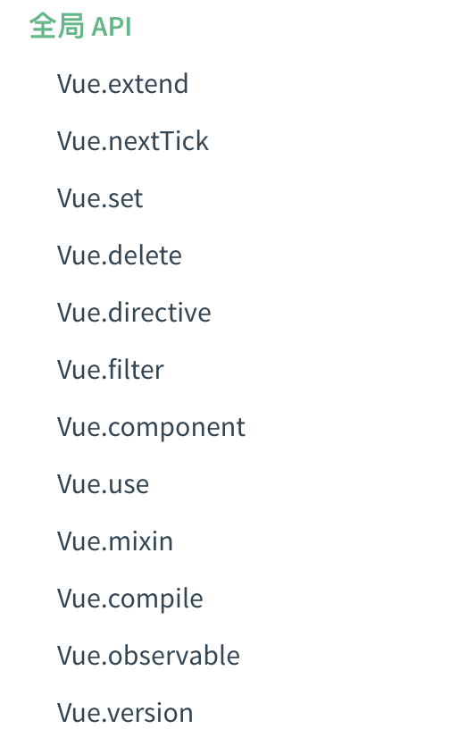

引入Vue的时候，vue内部做了什么
执行如下代码：
import Vue from 'vue'
// 打印出引入的Vue
console.dir(Vue)
结果如下图：

点开prototype,结果如下图：

先执行了下面的5个mixin函数
initMixin(Vue) // Vue.prototye上添加了
_init方法- stateMixin(Vue) // Vue.prototye上定义了属性:
$data、$props，方法：$set、$delete、$watch - eventsMixin(Vue)// Vue.prototye上添加了四个方法:
$on、 $once 、$off 、$emit - lifecycleMixin(Vue)// lifecycleMixin(Vue)，在原型Vue.prototye上添加了三个方法：
_update 、$forceUpdate 、$destory renderMixin(Vue)// Vue.prototye上添加了方法：
$nextTick 、_render、 _o、 _n、 _s、 _l、 _t、 _q、 _i、 _m、 _f、 _k、 _b、 _v、 _e、 _u、 _g、 _d、 _p然后执行如下代码，在
src/core/index.js中
import Vue from './instance/index'
import { initGlobalAPI } from './global-api/index'
import { isServerRendering } from 'core/util/env'
import { FunctionalRenderContext } from 'core/vdom/create-functional-component'
/**
* 作用：给构造函数Vue定义全局的静态属性和静态方法
* 定义静态属性，给Vue添加属性config，options
* 定义静态方法，util,set,del,nextTick,use,mixin,,extend,directive,component,filter
*/
initGlobalAPI(Vue)
// Vue.prototype上添加属性 $isServer
Object.defineProperty(Vue.prototype, '$isServer', {
get: isServerRendering
})
// Vue.prototype上添加属性 $ssrContext
Object.defineProperty(Vue.prototype, '$ssrContext', {
get () {
/* istanbul ignore next */
return this.$vnode && this.$vnode.ssrContext
}
})
// expose FunctionalRenderContext for ssr runtime helper installation
Object.defineProperty(Vue, 'FunctionalRenderContext', {
value: FunctionalRenderContext
})
// package.json中的version
Vue.version = '__VERSION__'
export default Vue
initGlobalAPI(Vue)：
/* @flow */
import config from '../config'
import { initUse } from './use'
import { initMixin } from './mixin'
import { initExtend } from './extend'
import { initAssetRegisters } from './assets'
import { set, del } from '../observer/index'
import { ASSET_TYPES } from 'shared/constants'
import builtInComponents from '../components/index'
import {
warn,
extend,
nextTick,
mergeOptions,
defineReactive
} from '../util/index'
/**
* 作用：给构造函数Vue定义静态属性和静态方法
* 定义静态属性，给Vue添加属性config，options
* 定义静态方法，util,set,del,nextTick,use,mixin,,extend,directive,component,filter
* @param {*} Vue
*/
export function initGlobalAPI (Vue: GlobalAPI) {
// config
// 给configDef对象添加get，set方法
const configDef = {}
configDef.get = () => config
if (process.env.NODE_ENV !== 'production') {
configDef.set = () => {
warn(
'Do not replace the Vue.config object, set individual fields instead.'
)
}
}
// 给Vue添加属性config = configDef
Object.defineProperty(Vue, 'config', configDef)
// exposed util methods.
// NOTE: these are not considered part of the public API - avoid relying on
// them unless you are aware of the risk.
// 虽然暴露了一些辅助方法，但官方并不将它们列入公共API中，不鼓励外部使用
Vue.util = {
warn,
extend,
mergeOptions,
defineReactive
}
// 设置响应式对象的响应式属性，强制触发视图更新，在数组更新中非常实用，不适用于根数据属性
Vue.set = set
// 删除响应式属性强制触发视图更新， 使用情境较少。
Vue.delete = del
// 结束此轮循环后执行回调，常用于需要等待DOM更新或加载完成后执行的功能。
Vue.nextTick = nextTick
// 给Vue添加一个纯净的options属性
Vue.options = Object.create(null)
// 给Vue.options添加三个属性Vue.options = { components:{},directives:{},filters:{}}
ASSET_TYPES.forEach(type => {
Vue.options[type + 's'] = Object.create(null)
})
// this is used to identify the "base" constructor to extend all plain-object
// components with in Weex's multi-instance scenarios.
// 给Vue.options添加属性_base = Vue
Vue.options._base = Vue
// 将keepAlive对象添加到Vue.options.components上
extend(Vue.options.components, builtInComponents)
// 向Vue类挂载静态方法
// 给Vue添加use方法，安装插件，自带规避重复安装
initUse(Vue)
// 给Vue添加mixin方法，常用于混入插件功能，不推荐在应用代码中使用。
initMixin(Vue)
// 给Vue添加extend方法，创建基于Vue的子类并扩展初始内容。
initExtend(Vue)
// 全局API 资源获取和注册,directive:注册全局指令、component:注册全局组件、filter:注册全局过滤器
initAssetRegisters(Vue)
}
思考： 为什么我们能够使用全局的api ?就是因为initGlobalAPI(Vue)这个函数，给Vue构造函数添加了这些全局的静态属性和方法

从上面的过程我们知道了，在项目中import Vue from vue时,除了给Vue的prototype添加不同的属性和方法，也给Vue添加了不同的属性和方法。下面我们在看看我们在new Vue()的时候做了什么下一章